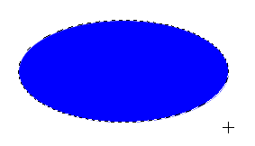

本項では、選択範囲作成の基本として、長方形選択ツールと楕円形選択ツールについて学習します。
まずは選択範囲作成の基本操作を理解するため、
比較的操作の簡単な[長方形選択ツール]と[楕円形選択ツール]の操作を学習します。
まずは素材フォルダ「PS04」から素材ファイル4_1_2.psdを開きましょう。
[ツールパネル]から[長方形選択ツール]を選択します。
画像上でマウスポインタが十字のマーク[+]に変化します。
コントロールパネルを確認し、[ぼかし]の設定が《0px》になっていることを確認します。
（※ぼかしについては後で解説します）
画像上で青い長方形の左上角に始点を決めてドラッグします。
ドラッグの操作にあわせて長方形のマーキーが作成されます。
すべての選択範囲を解除するときには、メニューバーの[選択範囲]-[選択を解除]を選ぶと、
画像上のすべての選択範囲を解除することができます。
続いて[楕円形選択ツール]を使用します。
操作方法は[長方形選択ツール]とほぼ変わりません。
[ツールパネル]から[長方形選択ツール]アイコンを長押しし、
[楕円形選択ツール]を選択します。
[長方形選択ツール]と同様に青い楕円の上をドラッグして選択範囲を作成します。
このとき、ドラッグした状態でマウスから指を離さず、
キーボードの【Spaceキー】を押しながらドラッグすると、
選択範囲の位置を移動させることができます。
【Spaceキー】から指を離せば、選択範囲の大きさを調整できます。
この間、マウスのドラッグから指を離してしまうと、
その段階で選択範囲が確定してしまいます。
青い楕円をきれいに選択できるように練習してみましょう。

以上でこの項の学習は終了です。
ファイルは閉じて次の項へ進んでください。